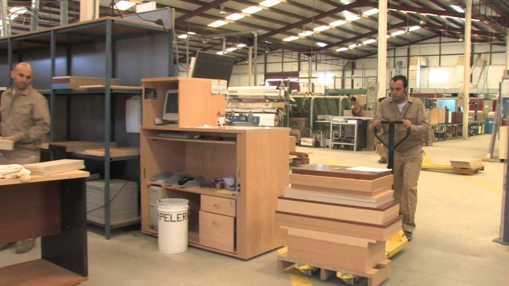

ML Amoblamientos
Nosotros trabajamos con un producto indispensable para la industria de la construcción, combinando nuestros conocimientos, experiencia y tecnología de última generación. Fabricamos: puertas placas, interiores y frentes de placard, amoblamientos de cocina, carpintería de obra en general, y equipamientos para bancos, hoteles, oficinas y templos. Garantizamos una buena experiencia a cada uno de nuestros clientes.
ML Muebles se dedica al Diseño y Fabricación de muebles de Madera Premium. Trabajamos madera de demolición por 2 motivos: Ecología y Oportunidad. Contribuimos con nuestro granito de arena en pos de un mundo autosustentable, seleccionando meticulosamente las maderas a trabajar, que, sumados a nuestros procesos de calidad auto-impuestos, logramos no solo productos de una calidad envidiable, sino que tambien son unicos!. Trabajamos exclusivamente bajo pedido por decisión propia y a modo de diferenciarnos del resto, somos la primera fabrica de muebles, completamente digitalizada, que trabaja directamente con el consumidor final. Cada producto fabricado por Cardiff tiene el 100% de nuestra atención.
Los envíos al interior, quedan a cargo del cliente contratar el transporte. Sólo cobramos el embalaje y el envío hasta el transporte contratado o bien pueden retirarlo por local.
Maecenas pharetra pretium quam ut posuere. Quisque luctus sem purus. Phasellus vel nibh sed erat interdum placerat eget a dui. Vivamus viverra pharetra congue. Sed pretium mi eu dui congue pulvinar. Donec felis risus, malesuada quis tristique faucibus, vestibulum non urna. Fusce nec orci pulvinar, blandit velit quis, finibus neque. Mauris malesuada metus eget ornare pellentesque. Nunc pharetra ante eget ullamcorper finibus. Orci varius natoque penatibus et magnis dis parturient montes, nascetur ridiculus mus. Nulla maximus a dolor non condimentum. Suspendisse convallis ullamcorper justo.